Թեստ 45
30:00
1. "Ճանապարհային երթևեկության անվտանգության ապահովման մասին" ՀՀ օրենքի համաձայն՝ կանգառ է համարվում՝
2. Հողային ծածկույթով ճանապարհից դուրս գալով ասֆալտբետոնե ծածկույթ ունեցող ճանապարհ
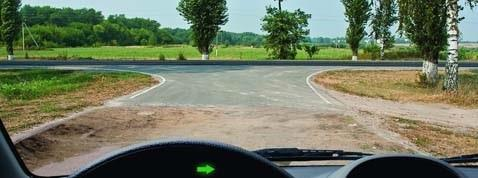
3. Ավտոբուսների շահագործումն արգելվում է, եթե՝
4. Մոտոցիկլների շահագործումն արգելվում է, եթե`
5. Երթևեկությունն ուղիղ շարունակող ավտոբուսի վարորդը պարտավո՞ր է արդյոք զիջել ճանապարհը բեռնատար ավտոոբիլին։
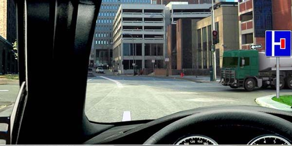
6. Այս ճանապարհային նշաններից ո՞րը չի համարվում արգելող:
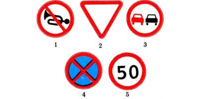
7. Ո՞ր տրանսպորտային միջոցի վարորդը պետք է զիջի ճանապարհը:
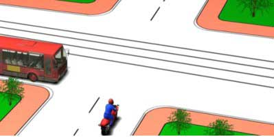
8. Ի՞նչ է ցույց տալիս այս գծանշումը:
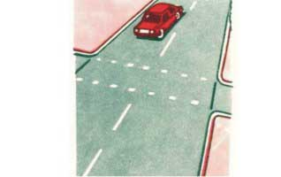
9. Ինչպիսի՞ առավելագույն արագությամբ է թույլատրվում տրանսպորտային միջոցների քարշակումը ճկուն կցիչով:
10. Ո՞ր տարբերակում է թույլատրված հետընթացը
11. Այս նշաններով ի՞նչ արագության ռեժիմ է սահմանված ճանապարհին
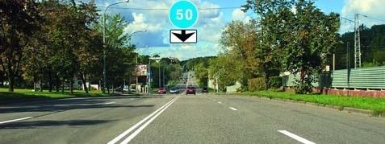
12. Այս խաչմերուկում հետադարձ կատարելիս
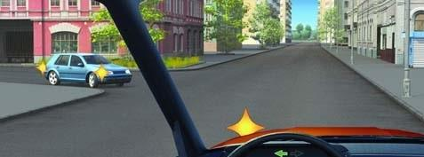
13. Այս դրությունից ո՞ր ուղղությամբ կարող է վարորդը շարունակել երթևեկությունը
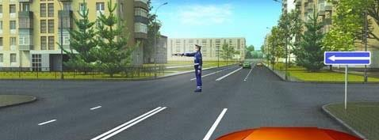
14. Ո՞ր նկարում է վարորդը ճիշտ կատարում շրջադարձը:
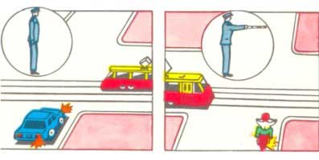
15. Կապույտ ավտոմոբիլը խաչմերուկը կանցնի`
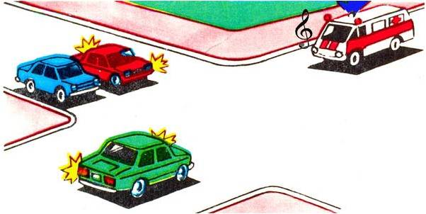
16. Ինչի՞ մասին է տեղեկացնում թեթև մարդատար ավտոմոբիլի վարորդի կողմից ձեռքով տրված ազդանշանը:
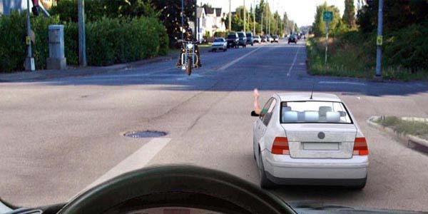
17. Այս գծանշումը վազանցը
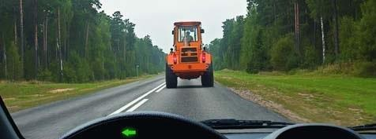
18. Պարտավոր եք արդյո՞ք նշված իրադրությունում տալ ազդանշան լուսային ցուցիչով
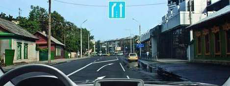
19. Ո՞ր վարորդն է խախտել կայանման կանոնները
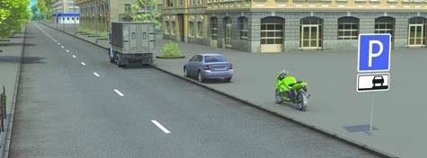